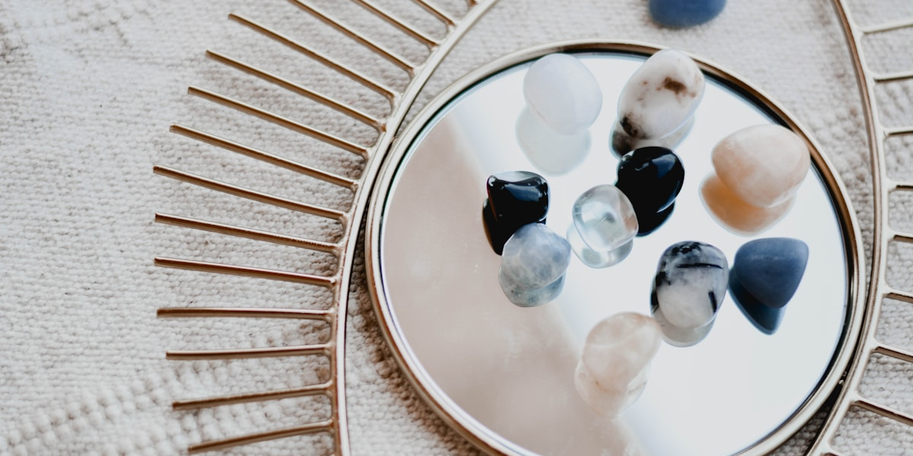

How to Choose the Right Crystals: A Guide to Boosting Energy and Luck
Do you feel like something's missing in your life? Perhaps you're searching for a way to enhance your energy and luck. Crystals might be the answer you've been looking for. This guide will help you choose the most suitable crystals for your needs and show you how to use them to improve your life.
Understanding Your Needs: Selecting the Right Crystals
The first step in choosing crystals is understanding your needs. Here are some common needs and corresponding crystal suggestions:
- Increase Wealth: Citrine, Lapis Lazuli, Green Fluorite
- Improve Relationships: Rose Quartz, Moonstone, Blue Lace Agate
- Boost Work Efficiency: Tiger's Eye, Black Tourmaline, Clear Quartz
- Enhance Confidence: Sunstone, Orange Calcite, Rutilated Quartz
- Balance Emotions: Amethyst, Blue Agate, Green Aventurine
Ways to Use Crystals: Incorporating Them into Daily Life
Once you've chosen your crystals, there are various ways to incorporate them into your daily life:
- Wear as Jewelry:
- Bracelets: In constant contact with skin for direct energy transfer
- Necklaces: Close to the heart chakra, aids in emotional balance
- Earrings: Enhances intuition and perception
- Home Decor:
- Crystal Spheres: Place on your desk to boost work energy
- Crystal Clusters: Display in the living room to purify space energy
- Crystal Points: Keep in the bedroom to improve sleep quality
- Meditation Tools: Hold or place around you during meditation to deepen your connection
- Carry with You: Keep small crystals in your pocket or bag for constant energy support
Why Regularly Upgrade and Replace Your Crystals?
Regularly replacing and upgrading your crystals is important for several reasons:
- Energy Saturation: Crystals may become less effective after long-term absorption of negative energy
- Changing Personal Needs: As your life stages change, you may need different types of crystal support
- Seasonal Adjustments: Different seasons may require different energy support
- Energy Boost: Upgrading to higher quality crystals can bring more powerful energy
- Maintaining Freshness: Trying new crystals can reignite your enthusiasm for life
How to Know When to Replace Your Crystals
Here are some signs that you might need to consider replacing your crystals:
- The crystal has lost its original luster or become cloudy
- You no longer feel the crystal's energy
- Your life goals or needs have significantly changed
- You suddenly feel strongly attracted to a new type of crystal
- Your intuition tells you it's time to try new crystals
Ready to Discover Your Destiny?
Embark on your personal Suan ming journey with our curated selection of Five Elements-inspired products. Enhance your self-discovery and bring balance to your life with these carefully crafted items:

Five Elements Self-Discovery Kit
Discover your dominant elements and gain personal insights with our comprehensive guide and assessment tools.
Learn More
Elemental Harmony Candles
Set of 5 scented candles, each representing an element to bring balance and tranquility to your space.
Shop Now
Wu Xing Meditation Crystals
Enhance your meditation practice with our set of five crystals, each attuned to a specific element.
ExploreEmbrace the ancient wisdom of Suan ming and discover how the Five Elements can illuminate your life's path. Start your journey of self-discovery today!
Explore All Five Elements ProductsDisclaimer: Chinese fortune telling is for entertainment and personal insight purposes only. Always consult with appropriate professionals for important life decisions.